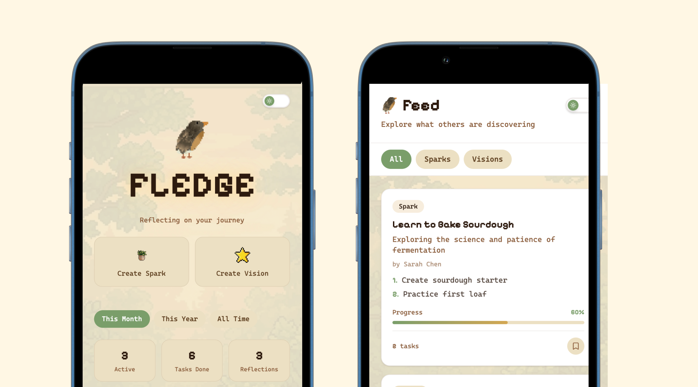
Fledge
For UMSI's Annual Designathon; how do you experience parallel lives?
My coursework, tech stack, and skills.
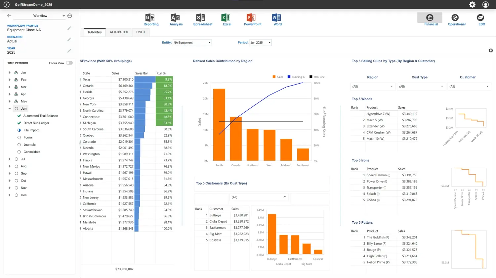
Integrating AI-powered features and complex data visualization for enterprise financial planning at OneStream.
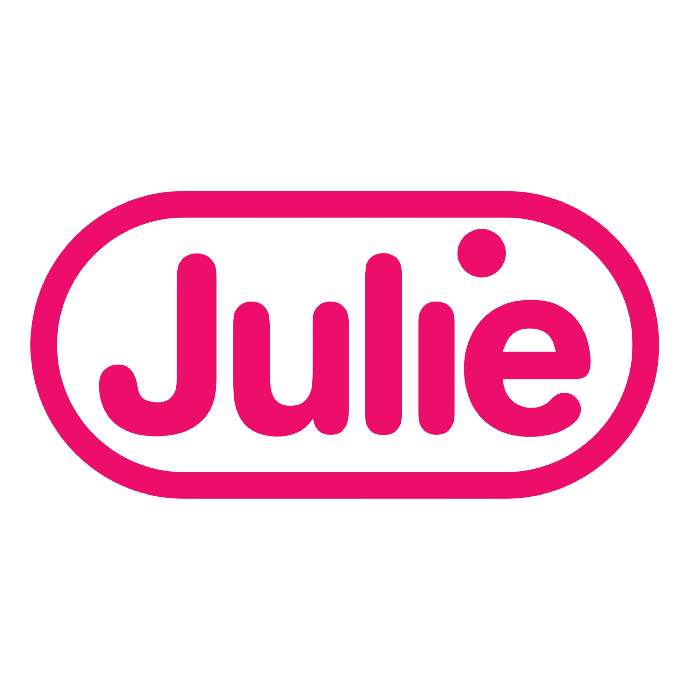
Overhauling a healthcare site for brand alignment, incorporating AI-powered chat and iterative user testing for web.
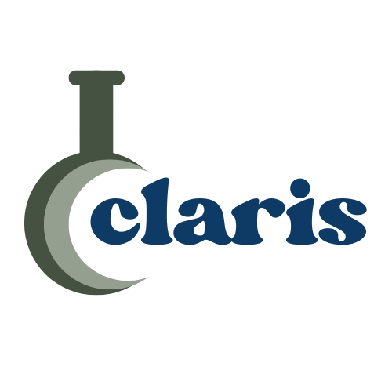
Building a research-driven tool for academic labs, incorporating AI assistance and unified workflows based on real user needs.
The pillars I live by as a designer who loves to code.
 e
x
p
l
o
r
a
t
i
o
n
s
e
x
p
l
o
r
a
t
i
o
n
s
Side projects spanning code, UI/UX, and visual design.
Extras!
Sept 2025 – Feb 2026
Julie is a women’s consumer healthcare startup on a mission to become the one-stop shop for women’s reproductive and sexual health. Alongside a team of 9 UI interns and directors at Julie, we overhauled the website to align with newly defined company goals, including a resource hub integrating medical expertise, AI assistance, and culturally relevant content for AFAB users.
Julie outlined three goals for the site overhaul:
Julie’s site received 190k user sessions and 350k site views over 6 months, with the top traffic producer being organic search. These statistics signal an existing engaged audience, with the chance to expand beyond a healthcare brand but also a trusted partner in women’s reproductive health.
Julie’s existing site serves primarily as a product page for Julie’s two flagship products, emergency contraception and cold sore gel. Julie’s new mission with this new site is simple: “In a couple of years, when a college student has an uncomfortable question about sex, a friend says ‘just ask Julie.’”
As a result, we audited the site and identified key changes to be made to support Julie in their product and brand goal. What follows is a shortlist of these changes.


The new articles page with reviewed medical articles did not visually uphold the sensitivity and scientific nature of the subject material. Julie’s site lacked the medical credibility that would keep users coming to Julie as a first resource for medical advice. Before trying to uplift and handle sensitive health questions, users need to see Julie as a place with healthcare professionals providing essential information.
Upon identifying the clear gap between medical professionals and medical advice, I created a low-fidelity wireframe of medical team pages. These pages feature professional headshots, education background, and work history to create a sense of much needed professionalism.
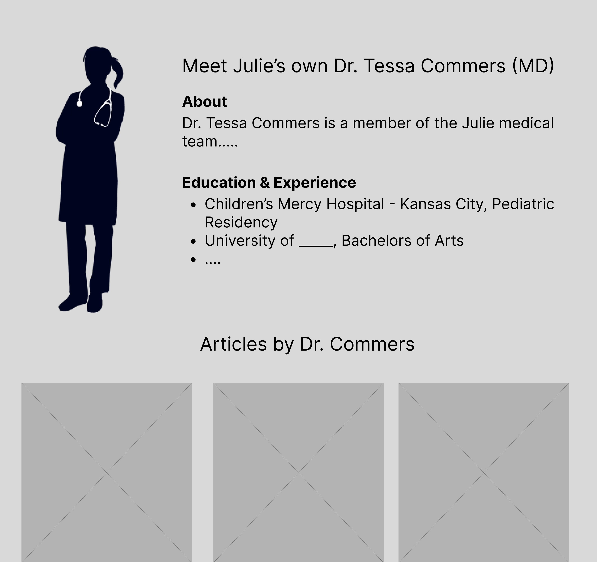
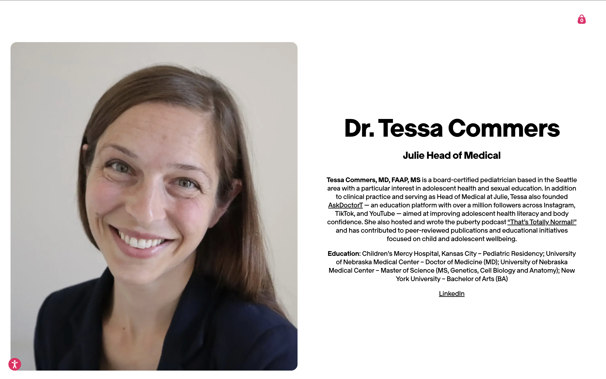
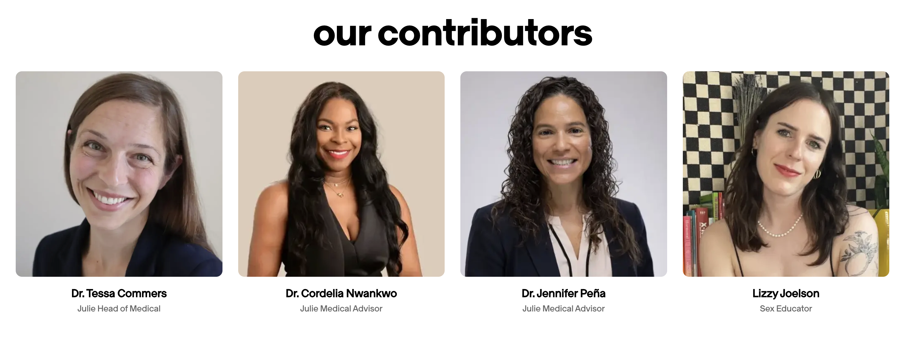
The original FAQ page presented itself as an extensive, intimidating list of questions ranging from side effects to before and aftercare of the EC pill. This overwhelming and exhaustive list created a sense of fear rather than a sense of genuine curiosity or interest.
The intern team advocated for a restructuring of the FAQ page, namely for two things: modularity and reframed language.
Our mockup above splits the questions into expandable drawers with just the subject clearly labeled above. Without the subjects, it almost seemed the whole list was about the EC’s side effects, but a clear text hierarchy helped with making it readable and clear the FAQs were more than just the pill’s effects.
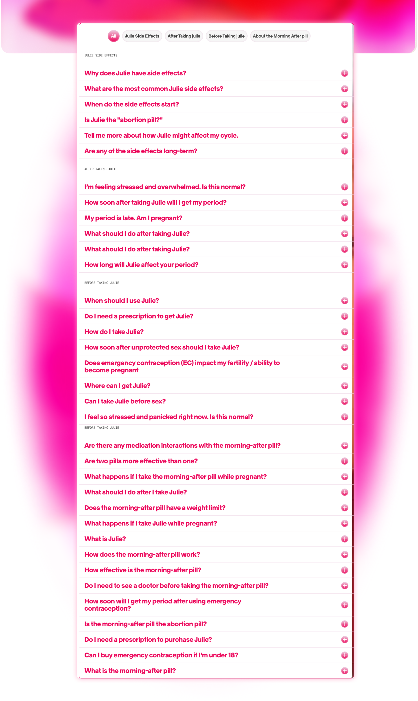
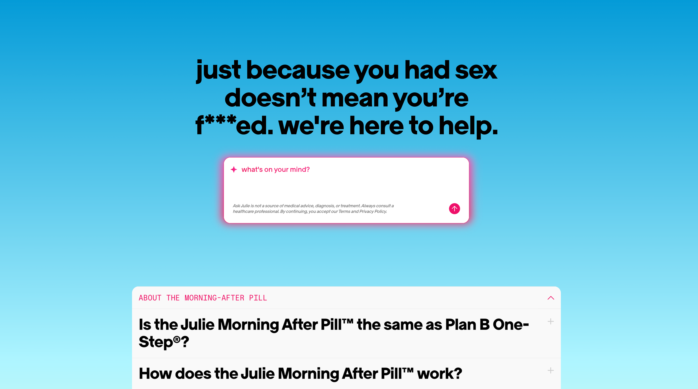
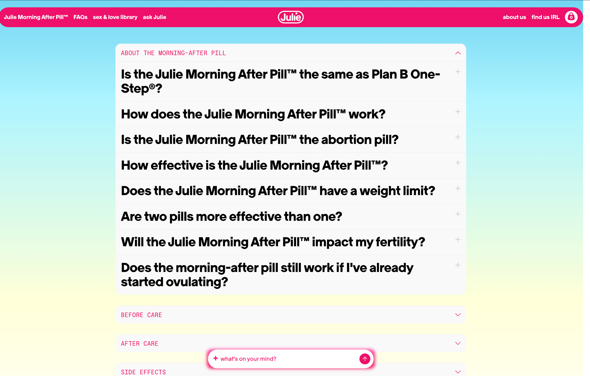
With visual aesthetics being a focal point of any consumer facing software, a central challenge was balancing cultural relevance with the credibility expected of a consumer healthcare brand.
The first iteration leaned into pinks, purples, and oranges paired with new 3D graphics, which, while warm and energetic, ultimately conflicted with Julie’s existing packaging and brand identity. The high saturation created visual confusion and did not integrate well with the brand’s earlier identity, making a palette shift necessary.


A key consideration was Julie’s core revenue stream: the sale of their FDA-approved medications. The product pages struggled to coexist with the more expressive, upbeat direction of the resource hub, but returning to Julie’s original blues and whites grounded the design, and upheld both the clinical trust of the product experience and the warmth of the health resources.


The article grid used a card layout with tags, titles, and small credential tags beside medical authors’ names as a direct response to the credibility challenges identified earlier. The system worked, but the cover images introduced an unexpected tension: the Pinterest-style aesthetic read as culturally relevant, but visually undermined the medical authority of the articles themselves. Without clearly related imagery, the grid felt less like a curated health library and more like a lifestyle blog.
The static quality of the page compounded this; the layout felt closer to a collage board than an interactive, information-rich experience. To restore a sense of life and play, we introduced hover effects on article cards: a soft pink outline and rounded corners that animate on interaction. The effect adds personality without sacrificing credibility, signaling that the site is warm and inviting, but still a place you can trust.
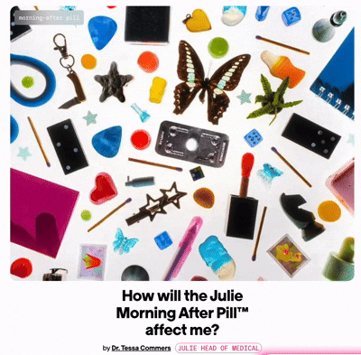
Before final rollout, we turned our attention to Julie’s newest feature: an AI assistant powered by Ema, a generative model trained exclusively on medically reviewed data and scoped solely to reproductive health questions. Because the assistant handles sensitive health information and is designed to be conversational rather than clinical, it was essential that Ema’s interface align with human-AI interaction principles that felt safe, supportive, and trustworthy.
Where to put the AI was a genuine debate. As an innovative, newly implemented feature, there was a case for keeping it accessible at all times, citing that persistent visibility would encourage use and signal that this wasn’t a typical healthcare site. But, a chat widget on every page risks feeling gimmicky, and worse, it could pull users away from the articles and FAQ sections that anchor the site’s credibility.
We advocated for anchoring the AI beneath the FAQ on the homepage rather than floating it site-wide. The solution that ultimately landed was a sticky bar, or a small, unobtrusive strip fixed to the bottom of the screen. It keeps the assistant available without demanding attention, persistent without being pushy.
A key part of the AI was the experience it provided users, especially those who may be in a more vulnerable place concerning birth control, pregnancy, and other reproductive topics. The process of vetting the AI was crucial to ensure a positive user experience, which relied on everything from the actual interface and features provided to the language used when responding. The AI excelled at inclusivity, using supportive, comforting language that aligned with Julie’s shame-free mission. However, the interface itself slowly became more overwhelming and cluttered as more information was provided by the AI. For example, the AI references existing articles on the site and allows the user to split-screen the article and conversation, which we hoped would help with user engagement and trust. In practice, the interface became unintuitive, and toggling between the different parts of the interface (the article, close button, exiting back to the site) became difficult. We suggested a slider-controlled split-screen view to aid user control while preserving the connection between the user, AI, and medical information.
Jun 2026 – Aug 2026
I am an incoming intern at OneStream Software this summer, where I’ll be working to simplify complex data flows for enterprise software. Details to come soon!
Jan 2025 – May 2025
Under construction! This will be updated in 1–2 days.
A designer’s work varies across multiple disciplines, skills, and is an ever-changing field that’s suited to the needs of engineering and society. As a result, I think it’s easy to get caught up in the variety of tasks, skills, innovations etc. that we are surrounded by in and out of our workspaces.
These three pillars are what help keep me grounded and bring me back to the purpose of my work as a designer.
Under construction! This will be updated in 1–2 days.
Side projects spanning code, UI/UX, and visual design.

For UMSI's Annual Designathon; how do you experience parallel lives?
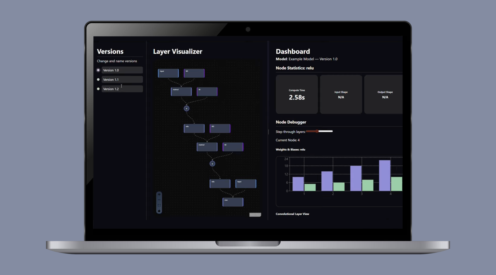
For MHacks, UMich's annual hackathon; how can we help students understand and debug machine learning models?
This will be updated in 1–2 days.
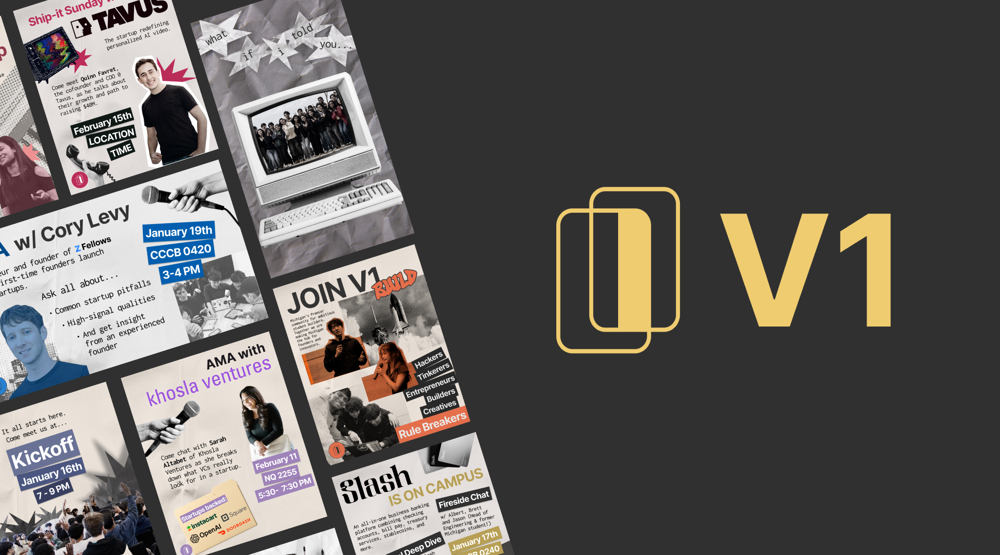
My graphic design portfolio for V1 Michigan (a startup accelerator at UMich) for the Winter 2026 semester, where I served as lead graphic designer.
Take a look at hand-drawn assets from previous iterations of my personal website!
This will be updated in 1–2 days.
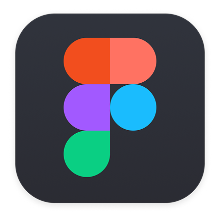
I'm a senior at the University of Michigan, where I'm pursuing a Bachelor of Science in Computer Science and a Minor in UX Research and Design. This mixed educational background has provided me with tons of useful skills and perspectives, making it easier for me to work under real engineering constraints and develop products that are both functional and user-friendly.